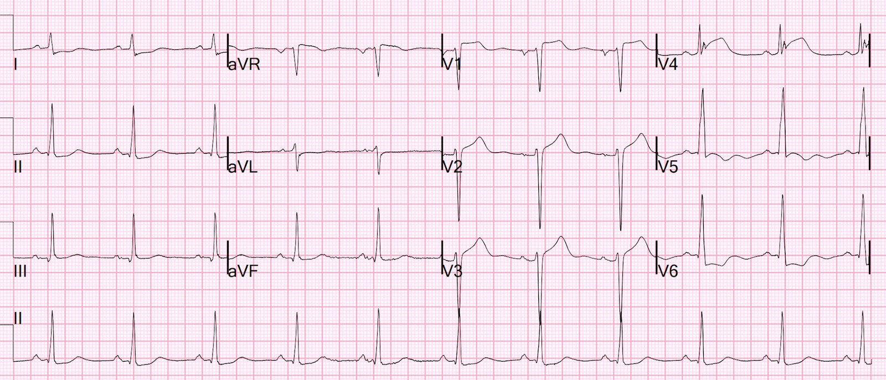
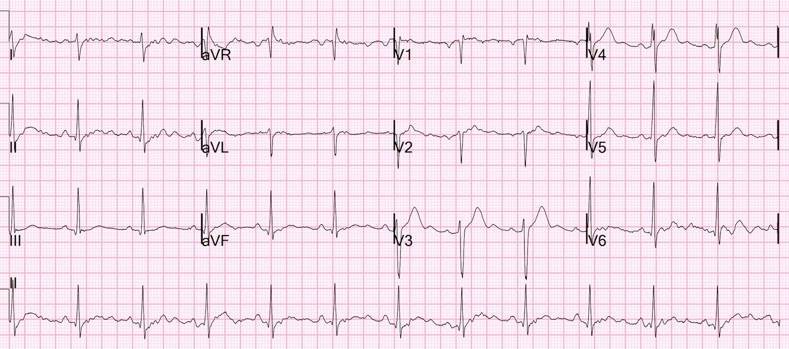
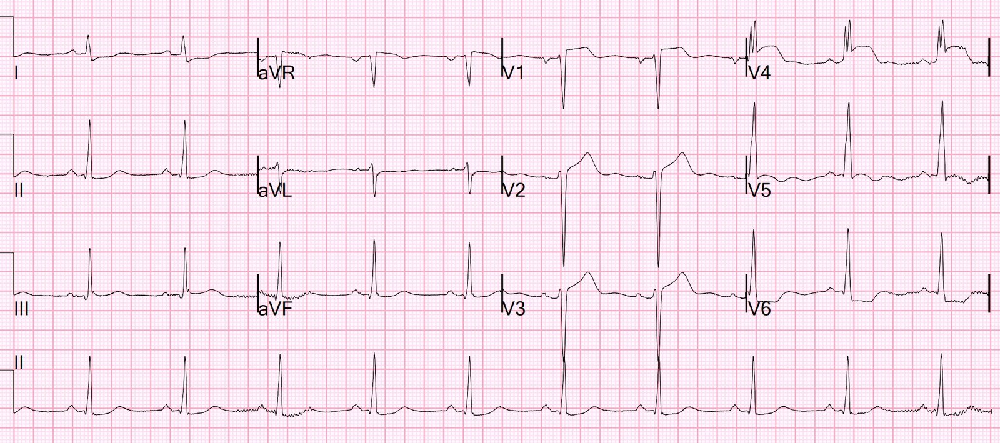
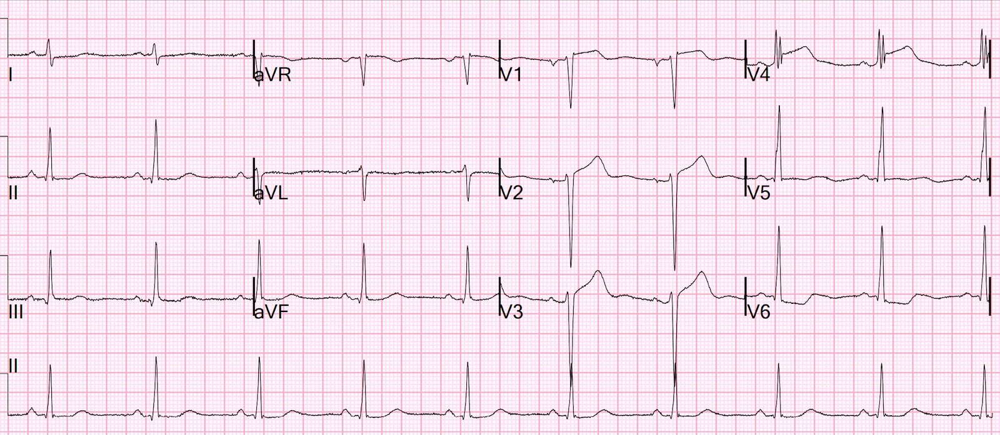
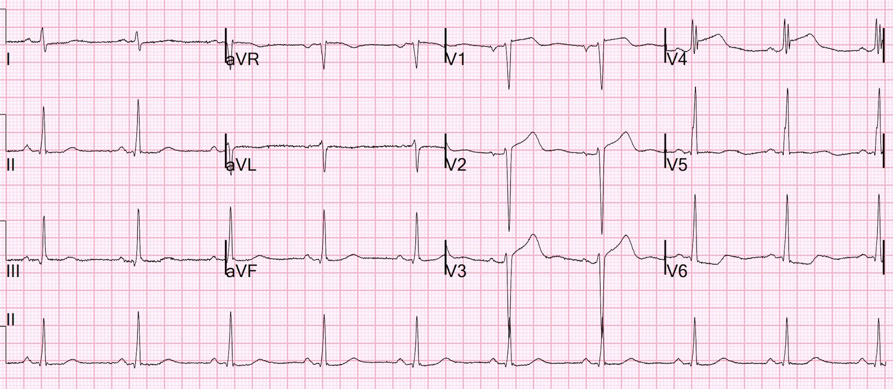
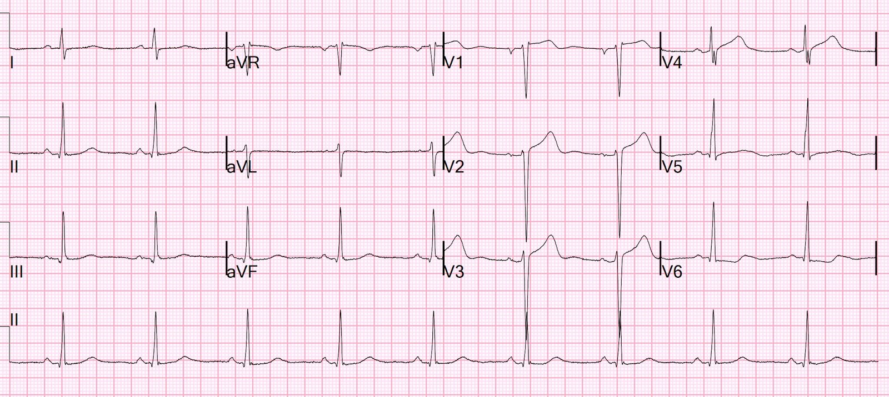
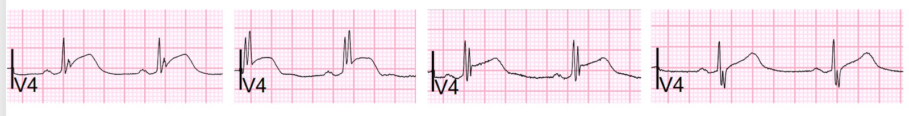
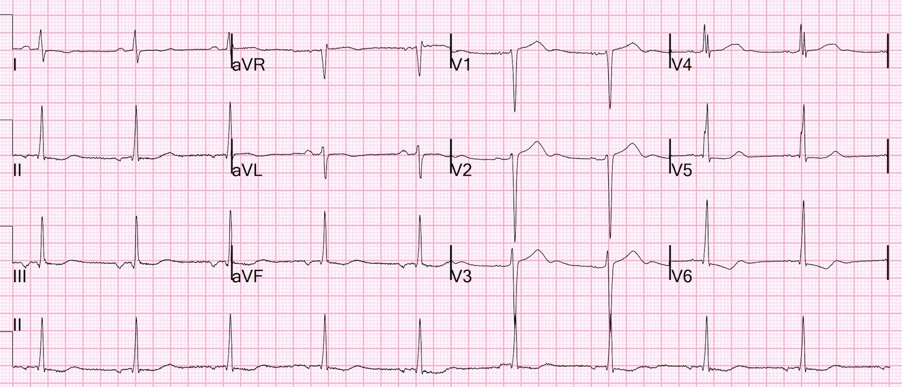
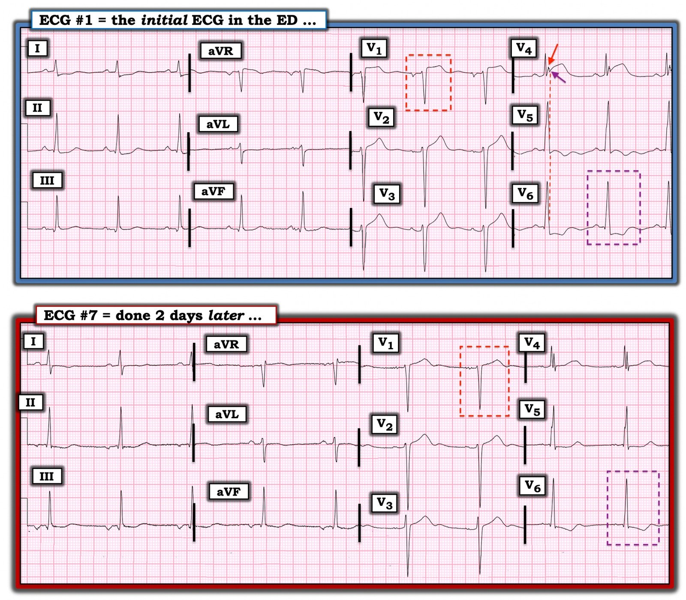

01/11/2022 — Ngộ độc opiate, không đau ngực cũng không khó thở. Bất hòa nhận thức.
Bản dịch tiếng Việt của bài "Opiate overdose, without chest pain or shortness of breath. Cognitive dissonance." – Dr. Smith’s ECG Blog. Giữ nguyên toàn bộ 10 hình ảnh của bản gốc.
Tôi đang đọc các điện tâm đồ trên hệ thống và thấy bản này….


Tôi đã ghi diễn giải của mình là gì?
Diễn giải: “Tắc LAD cấp cho đến khi chứng minh được điều ngược lại. ”
Có ST chênh lên không có giá trị chẩn đoán ở V1-V3, với sóng T khá lớn nhưng trong bối cảnh sóng S sâu (điện thế cao). TUY NHIÊN, chuyển đạo V4 có giá trị chẩn đoán OMI. Đây là ST chênh lên rất nhiều, sóng T tối cấp khổng lồ, và mất sóng S (điều này ở V4, khác với V2-3, có thể bình thường nhưng phải làm tăng mạnh sự nghi ngờ.) Có ST chênh xuống ở V5-6. Riêng điều này có thể do LVH, nhưng V4 thì KHÔNG thể do LVH.
Có một điện tâm đồ từ 5 năm trước:


Tôi đi kiểm tra bệnh sử:
Bệnh sử: Lúc đó là giữa đêm. Bệnh nhân ngoài 50 tuổi, có tiền sử đặt stent mạch vành và phân suất tống máu thất trái giảm nhẹ. Ông ấy đang hút một loại thuốc phiện (opiate) thì đột ngột gục xuống. Ông được thông khí bằng bóng-van-mặt nạ (BVM) khi đến viện. Ông tỉnh lại sau khi dùng naloxone. Điện tâm đồ này được ghi theo y lệnh thường quy (standing order) dành cho chăm sóc tích cực.
Ông phủ nhận có đau ngực hay khó thở (SOB).
Điện tâm đồ được ghi lại ở phút thứ 5


Sóng T bớt tối cấp hơn. Có lẽ đã có phần nào tái tưới máu tự phát?
“Lộ trình B” (Pathway B) được kích hoạt, nghĩa là hội chẩn ngay với khoa Tim mạch. Bác sĩ tim mạch lo ngại về điện tâm đồ, nhưng không muốn kích hoạt phòng thông tim.
Bác sĩ tim mạch muốn làm siêu âm tim chính thức (formal) cấp cứu trước.
Một điện tâm đồ khác được ghi 25 phút sau bản đầu tiên:


Sóng T giảm thêm nữa.
Sóng S đang quay trở lại.
Nhiều khả năng đã có phần nào tái tưới máu tự phát
Vào lúc này, kết quả troponin I độ nhạy cao (hs) đầu tiên trả về là 31 ng/L (Abbott Architect, giới hạn trên tham chiếu (URL) cho nam = 34 ng/L). Như vậy giá trị này nằm trong giới hạn bình thường, nhưng đã gần tới URL và điều này là bất thường ở một người vốn khỏe mạnh. Nó gợi ý rằng các lần troponin tiếp theo sẽ tăng và bệnh nhân sẽ được khẳng định nhồi máu cơ tim cấp.
60 phút


Không thay đổi nhiều so với lúc 25 phút
Siêu âm tim chính thức được làm lúc 120 phút và cho thấy phân suất tống máu thất trái ước tính là 40 %. Có rối loạn vận động thành khu trú mới — vách mỏm, thành dưới, thành bên và thành trước vô động, kèm mỏm loạn động.
Điều này xác nhận tắc LAD.
Một điện tâm đồ khác được ghi lúc 120 phút, sóng S đã tái lập


Sóng T và STE đang trở về bình thường.
Sóng S đã tái lập.
Chắc chắn đã có tái tưới máu.
Đây là toàn bộ diễn tiến của chuyển đạo V4 trong 140 phút


Lưu ý “độ đầy đặn” (bulk) của sóng T giảm dần và sóng S tái lập
Diễn biến troponin:
0 giờ: 31 ng/L (bình thường)
2 giờ: 478 ng/L
4 giờ: 3963 ng/L
6 giờ: 11,279 ng/L (＞10,000 ng/L)
ACS (có tổn thương thủ phạm) với troponin I độ nhạy cao ＞ 5000-10,000 ng/L là định nghĩa OMI dùng trong nghiên cứu của chúng tôi, vì OMI nói chung gây tăng troponin vượt trên ngưỡng này. Tất nhiên điều này phụ thuộc nhiều yếu tố: 1) thời gian tắc, 2) tắc hoàn toàn hay gần hoàn toàn, với dòng chảy bằng không hay còn chút dòng chảy — dòng chảy trong động mạch là yếu tố then chốt, được đo bằng dòng chảy “TIMI”, 3) sự hiện diện của tuần hoàn bàng hệ, và các yếu tố khác.
Được đưa vào phòng thông tim sáng hôm sau:
Động mạch LAD:
–LAD là mạch máu khẩu kính lớn, vòng qua mỏm
–Ghi nhận các chỗ hẹp nối tiếp (tandem) 70% ở LAD đoạn gần, kèm theo
hẹp lan tỏa 70% ở đoạn giữa của mạch
–D1 là mạch khẩu kính nhỏ, hẹp 80% đoạn gần
–D2 là mạch khẩu kính trung bình, hẹp lan tỏa 95%, có vẻ được làm đầy
chủ yếu bởi tuần hoàn bàng hệ trái-trái
–LAD đoạn xa vùng mỏm bị tắc và được làm đầy bởi tuần hoàn bàng hệ phải-trái từ
RCA, như đã nêu ở trên
“Mặc dù không có tổn thương thủ phạm rõ ràng giải thích cho tình trạng troponin tăng đáng kể của bệnh nhân, không thể loại trừ hoàn toàn ACS do có nhiều chỗ hẹp được ghi nhận trên phim chụp mạch vành hôm nay. Trong bối cảnh đã đặt stent trước đó và phân suất tống máu thất trái giảm, nên theo hướng tái thông mạch do nhóm tim mạch (heart team) quyết định; điểm Syntax 28.5, gợi ý tỷ lệ biến cố tim mạch nặng chính giảm hơn khi phẫu thuật bắc cầu chủ vành.”
2 ngày sau


Đây là hình ảnh LVH điển hình, không có thiếu máu cục bộ
Bệnh nhân được phẫu thuật bắc cầu chủ vành (CABG) 4 nhánh.
Chẩn đoán ra viện là STEMI (STE không đạt “tiêu chuẩn”, nên “OMI” sẽ đúng hơn, nhưng “STEMI” vẫn tốt hơn rất nhiều so với cái tên mà ca này lẽ ra có thể bị gọi: NonSTEMI)
Trích từ ghi chép của một bác sĩ thực sự giỏi và hiểu biết:
“Điện tâm đồ 12 chuyển đạo được ghi lần đầu, bản 1, tại mốc thời gian ban đầu (time zero). Bản này cho thấy ST chênh lên kín đáo từ V1 cho tới tận V4, với ST chênh xuống ở V5, V6 và chênh xuống tối thiểu ở chuyển đạo I và II. Khi hỏi bệnh, bệnh nhân phủ nhận có bất kỳ đau ngực hay tức ngực nào. Các điện tâm đồ tiếp theo được ghi lúc 5 phút, 25 phút và 60 phút. Điện tâm đồ cũ cho thấy các dấu hiệu tương tự và Không có Diễn tiến trong suốt một giờ — điều này bất thường trong bối cảnh hội chứng vành cấp. Troponin ban đầu trả về âm tính.”
“Đánh giá:”
“ST chênh lên không đặc hiệu từ V1-V4, nghi tái cực sớm hay viêm màng ngoài tim, nghi dòng tổn thương cấp và ? Tác dụng chẹn kênh natri do một loại thuốc chưa xác định?”
“Khi không có đau ngực và troponin âm tính, có vẻ ít khả năng ông ấy đang bị hội chứng vành cấp, mặc dù điện tâm đồ trông đáng lo ngại. Mặt khác, điện tâm đồ ổn định trong suốt một giờ trong bối cảnh hội chứng vành cấp đang diễn ra một lần nữa là điều bất thường. Sau khi thảo luận tất cả những điều trên với nhân viên khoa cấp cứu, chúng tôi quyết định làm siêu âm tim khẩn (stat) để đánh giá chức năng thất trái tổng thể và rối loạn vận động thành, và tạm hoãn kích hoạt phòng thông tim vào thời điểm đó.”
Bình luận của Smith: nhiều nhận xét trong số này sai một cách có thể chứng minh được.
1. Điện tâm đồ RẤT đặc hiệu cho OMI.
2. Điện tâm đồ cũ không cho thấy điều gì tương tự
3. Điện tâm đồ chắc chắn có diễn tiến. Nó không “Ổn định”
4. Troponin ban đầu KHÔNG âm tính — nó chỉ là (chưa) vượt trên URL mà thôi.
5. Viêm màng ngoài tim thậm chí còn càng ít có khả năng hơn nữa ở người không có đau ngực.
Vì sao một bác sĩ xuất sắc lại có những nhận xét này? Tôi ngờ rằng đó là do bất hòa nhận thức (cognitive dissonance). Nhiều bác sĩ khó hình dung được rằng một người có thể bị tắc hoàn toàn động mạch vành mà không hề đau ngực hay khó thở. Bệnh sử mâu thuẫn với dữ liệu khách quan đến mức dữ liệu khách quan không “lọt” vào được tâm trí.
Nhưng OMI vẫn xảy ra mà không có triệu chứng đặc hiệu!!
May mắn cho bệnh nhân này, động mạch đã tự mở lại và tổn thương được giới hạn.
Điểm cần học chính: Hãy dùng xác suất tiền nghiệm và hậu nghiệm.
Có những điện tâm đồ đặc hiệu cho OMI đến mức đó là OMI bất kể bối cảnh lâm sàng. Có những điện tâm đồ đủ mơ hồ để bối cảnh lâm sàng trở nên then chốt. Điều này đúng với mọi xét nghiệm cho mọi bệnh lý: xác suất tiền nghiệm là then chốt để diễn giải xét nghiệm. Nhưng một xét nghiệm có độ đặc hiệu 99% là dương tính cho đến khi chứng minh được điều ngược lại, bất kể xác suất tiền nghiệm.
1. Nếu điện tâm đồ rất đặc hiệu, triệu chứng không cần phải đặc hiệu.
2. Nếu điện tâm đồ KHÔNG đặc hiệu lắm, thì phải có khó chịu ở ngực.
Ghi chép sau đó:
“Ông ấy cho biết trong 3-4 tháng qua có tiền sử khó thở khi gắng sức và đau ngực khi gắng sức. Ông đi bộ vài dãy nhà tới cửa hàng và các triệu chứng này sẽ nặng lên. Đau ngực có tính chất bóp nghẹt hoặc thắt chặt. Kéo dài từ 10-15 phút. Không lan. Đỡ khi nghỉ ngơi.”

===================================
BÌNH LUẬN CỦA TÔI, bởi KEN GRAUER, MD (1/11/2022):
===================================
Giống như Dr. Smith — tôi đã diễn giải điện tâm đồ ban đầu trong ca hôm nay không có sự hỗ trợ của bất kỳ bệnh sử nào. Nhận định của tôi tương tự như của ông ấy. Dr. Smith đã xem xét các thay đổi tuần tự qua 7 bản ghi trong ca hôm nay. Thay vào đó — tôi quyết định tập trung nhiều hơn một chút vào các dấu hiệu MẤU CHỐT trên bản ghi ban đầu ( = điện tâm đồ #1). Để cho rõ ràng, trong Hình 1 — tôi đã đánh dấu bản ghi ban đầu này, và so sánh nó với bản ghi cuối cùng được trình bày ở trên ( = điện tâm đồ #7).
- Nhịp ở điện tâm đồ #1 — là nhịp xoang với tần số ~65/phút. Các khoảng (PR, QRS, QTc) và trục (khoảng +75 độ) bình thường. Đáng lưu ý — QRS “trông” rộng ở một vài chuyển đạo (đặc biệt ở chuyển đạo V5) — nhưng khi đo thì không vượt quá 0.10 giây (là giới hạn trên của bình thường đối với độ rộng QRS).
- Tiêu chuẩn điện thế cho LVH được thỏa mãn (tức là, S sâu nhất ở V1 hoặc V2 + R cao nhất ở V5,V6 ≥35 mm).
Về Thay đổi Q–R–S–T ở điện tâm đồ #1:
- Sóng Q — Thấy các sóng Q nhỏ và hẹp ở các chuyển đạo dưới — và ở các chuyển đạo ngực bên ( = V5,V6). Nhiều khả năng đây là sóng q vách bình thường. Đáng lưu ý — sóng q vách bình thường có thể thấy ở các chuyển đạo dưới khi trục mặt phẳng trán tương đối thẳng đứng, như thấy ở đây.
- Tăng tiến sóng R — bình thường, với vùng chuyển tiếp (nơi sóng R trở nên cao hơn độ sâu của sóng S) xảy ra bình thường (ở đây, giữa V3 đến V4).
Về Thay đổi ST-T:
- Như Dr. Smith đã nêu — có ST chênh lên không đủ để chẩn đoán ở chuyển đạo V2 và V3. Hình dạng của sóng ST-T chênh lên ở các chuyển đạo trước V2,V3 là hình ảnh soi gương đối nghịch với hình ảnh “tăng gánh” thất trái ở các chuyển đạo bên trái (tôi bàn luận và minh họa chi tiết khái niệm này trong phần Bình luận của tôi — ở cuối trang của bài ngày 20 tháng Sáu năm 2020 trên Dr. Smith’s ECG Blog).
- Như Dr. Smith đã nêu — chuyển đạo MẤU CHỐT là chuyển đạo V4. Khi lần đầu nhìn thấy điện tâm đồ #1 — tôi đã nghĩ chỗ khía nổi bật ở chuyển đạo này (mũi tên ĐỎ ở chuyển đạo V4) có thể là sóng J do thiếu máu cục bộ gây ra. Tuy nhiên, điều chống lại nhận định này — là sự vắng mặt của chỗ khía tương tự ở các chuyển đạo khác. Hóa ra thay vì là một “điểm J” — chỗ khía có mũi tên ĐỎ mà chúng ta thấy ở chuyển đạo V4 của điện tâm đồ #1 nằm bên trong phức bộ QRS ở chuyển đạo này. Bằng đường thẳng đứng chấm ĐỎ — tôi đã xác định điểm kết thúc của phức bộ QRS (thấy rõ ở chuyển đạo V5 và V6). Do đó — mũi tên TÍM ở chuyển đạo V4 chỉ vào sóng S, vốn rõ ràng chênh lên trên đường nền!
- Điểm MẤU CHỐT: Sóng S chênh lên trên đường nền đủ tiêu chuẩn là T-QRS-D (biến dạng phần cuối QRS — Terminal-QRS–Distortion). Dù rõ ràng là bất thường khi T-QRS-D xuất hiện ở chuyển đạo V2 hoặc V3 — nó không phải lúc nào cũng bất thường khi thấy ở chuyển đạo V4. Dù vậy, trong bối cảnh có các dấu hiệu bất thường khác trên bản ghi này (đặc biệt là đoạn ST dạng vòm và chênh lên rõ rệt ở chuyển đạo V4) — dấu hiệu T-QRS-D ở chuyển đạo V4 gợi ý mạnh mẽ OMI LAD. (Để biết thêm về T-QRS-D — Xin xem phần Bình luận của tôi ở cuối trang của bài ngày 14 tháng Mười Một năm 2019 trên Dr. Smith’s ECG Blog).
- Ủng hộ cho nghi ngờ OMI LAD cấp của chúng ta ở điện tâm đồ #1 — là sự hiện diện của các thay đổi sóng ST-T bất thường ở một số chuyển đạo khác. Các thay đổi này gồm: i) đoạn ST dạng vòm (dù không có ST chênh lên) ở chuyển đạo V5 kế cận; ii) sóng ST-T dẹt không đặc hiệu ở các chuyển đạo III, aVL và aVF — và đặc biệt là ST chênh xuống dạng võng ở chuyển đạo I và II; và, iii) Gợi ý “xoáy trước tim“ (Precordial Swirl) qua ST chênh lên ở chuyển đạo V1 — và ST chênh xuống dạng bậc thềm (shelf-like) ở chuyển đạo V6.
Xoáy trước tim ở điện tâm đồ #1:
Như đã bàn luận trong bài ngày 15 tháng Mười năm 2022 trên Dr. Smith’s ECG Blog — Drs. Meyers và Smith đã đặt ra thuật ngữ mới gọi là “xoáy trước tim“ (Precordial Swirl) — trong đó tắc LAD cấp ở đoạn gần so với nhánh xuyên vách thứ 1 tạo ra một dạng ST chênh lên độc đáo ở chuyển đạo V1 (và cả ở chuyển đạo aVR) — kèm ST chênh xuống soi gương ở chuyển đạo bên V6 (và thường cả ở chuyển đạo V5).
- Hình ảnh xoáy trước tim dễ bị nhầm với LVH (và ngược lại) — vì cả hai thực thể này đều có thể cho thấy ST chênh lên ở các chuyển đạo trước kèm ST chênh xuống ở các chuyển đạo ngực bên.
Như tôi đã gợi ý trong phần Bình luận của tôi ở cuối trang của bài ngày 15 tháng Mười — tôi thấy hình dạng của ST chênh lên ở chuyển đạo V1 — và hình dạng của ST chênh xuống ở chuyển đạo V6 là đặc trưng trong hầu hết các trường hợp.
- Như thấy ở Hình 1 — hình ảnh trong hình chữ nhật chấm ĐỎ ở điện tâm đồ #1 — là bất thường, không chỉ vì mức độ ST chênh lên ở chuyển đạo V1 (là 2 mm) — mà còn vì hình dạng dẹt của đoạn ST chênh lên ở chuyển đạo này. Đoạn ST chênh lên của “tăng gánh” thất trái ở chuyển đạo V1 thường dốc lên (như thấy ở chuyển đạo V2 và V3) — và không nên được kỳ vọng có mức ST chênh lên tại điểm J ở chuyển đạo V1 lớn hơn so với ở chuyển đạo V2 và V3 (đặc biệt khi sóng S ở chuyển đạo V2,V3 sâu hơn sóng S ở chuyển đạo V1).
- Hãy so sánh hình dạng sóng ST-T ở chuyển đạo V1 của điện tâm đồ #1 — với hình dạng sóng ST-T ở chuyển đạo V1 của điện tâm đồ #7, được ghi 2 ngày sau đó (sau khi các thay đổi ST-T cấp đã gần như trở về bình thường hoàn toàn). Lưu ý ở chuyển đạo V1 của điện tâm đồ #7 — đoạn ST giờ đã dốc lên, và ST chênh lên tại điểm J không còn nữa.
- Ở chuyển đạo V6 của điện tâm đồ #1 — một lần nữa chính hình dạng của ST chênh xuống là điều không điển hình cho “tăng gánh” thất trái. Hình ảnh sóng ST-T trong hình chữ nhật chấm TÍM ở điện tâm đồ #1 về cơ bản là hình soi gương của sóng ST-T ở chuyển đạo V1 ( = điểm J chênh xuống 2.5 mm, với đoạn ST chênh xuống phẳng thay vì dốc xuống từ từ).
- Để so sánh — sóng ST-T ở chuyển đạo V6 của điện tâm đồ #7 trông giống “tăng gánh” thất trái hơn nhiều, ở chỗ điểm J chỉ chênh xuống rất ít và giờ đoạn ST dốc xuống từ từ.
- ĐIỀU CỐT LÕI: Hình dạng sóng ST-T ở chuyển đạo V1 và V6 của điện tâm đồ #7 trông đúng như kỳ vọng ở một bệnh nhân có LVH. Ngược lại — hình dạng sóng ST-T ở chuyển đạo V1 và V6 của điện tâm đồ #1 rõ ràng không điển hình cho “tăng gánh” thất trái — và, trong bối cảnh ST chênh lên rõ rệt kèm T-QRS-D ở chuyển đạo V4 — gợi ý mạnh mẽ hình ảnh xoáy trước tim của OMI LAD cấp.


TẠI SAO QRS ở chuyển đạo V4 lại có khía rõ như vậy?
Sau khi đã xác lập rằng chỗ khía có mũi tên ĐỎ ở chuyển đạo V4 của điện tâm đồ #1 không phải là sóng J — mà là một phần của phức bộ QRS — câu hỏi đặt ra là TẠI SAO chúng ta thấy khía QRS này chỉ ở chuyển đạo V4 (và không ở bất kỳ chuyển đạo nào trong 11 chuyển đạo còn lại)?
- Tôi tin câu trả lời là chuyển đạo V4 đánh dấu vùng chuyển tiếp đột ngột giữa QRS gần như âm hoàn toàn ở chuyển đạo V3 — và QRS gần như dương hoàn toàn ở chuyển đạo V5. Điều này có liên quan đến ca hôm nay — vì việc biết rằng mũi tên TÍM đánh dấu sóng S ở chuyển đạo V4 giúp xác lập sự hiện diện của T-QRS-D.
ĐỀ XUẤT: Hãy dành chút thời gian xem lại hình dạng phức bộ QRS ở chuyển đạo V4 trên từng bản ghi được trình bày ở trên trong ca hôm nay. Lưu ý rằng QRS ở từng bản ghi trong 7 bản ghi hôm nay đều có khía ở chuyển đạo V4 (nhưng không có ở chuyển đạo nào khác). Lưu ý rằng sóng S ở từng bản ghi trong 7 bản ghi hôm nay kể lại câu chuyện về những gì đang diễn ra ở LAD.
- Điện tâm đồ nền từ 5 năm trước ( = bản ghi thứ 2 được trình bày trong phần bàn luận ở trên của Dr. Smith) — cho thấy sóng S sâu và hoàn toàn bình thường — điều này hợp lý vì vào thời điểm đó không có tắc LAD.
- Ngược lại — sóng S chênh lên trên đường nền (tức là, = T-QRS-D) ở bản ghi thứ 1, thứ 3, thứ 4 và thứ 5 trong ca hôm nay — là khoảng thời gian LAD bị tắc.
- Bản ghi thứ 6 (ghi lúc 120 phút) — cho thấy sóng S ở chuyển đạo V4 đã được tái lập. Điều này xảy ra đồng thời với việc hình thái đoạn ST và sóng T ở các chuyển đạo khác trở về bình thường ( = các thay đổi sóng ST-T của tái tưới máu!).
- 2 ngày sau đó ( = điện tâm đồ #7 ở Hình 1) — hầu như mọi thay đổi ST-T cấp đã hết! Kết quả là — thấy phức bộ QRS phân mảnh với sóng S bình thường ở chuyển đạo V4.
- ĐIỀU CỐT LÕI: Ngay cả khi không có bệnh sử đau ngực mới xuất hiện — vẫn có nhiều manh mối trên điện tâm đồ ban đầu để ít nhất là gợi nghi ngờ mạnh OMI LAD cấp cho đến khi chứng minh được điều ngược lại.
===================================
T.B. (P.S.): Bạn có để ý rằng sóng P ở điện tâm đồ #7 không còn dương nữa? Đây là một thay đổi so với 6 bản ghi trước đó trong ca hôm nay — và đơn giản phản ánh rằng thay vì nhịp xoang, giờ là nhịp nhĩ thấp. Đáng chú ý — nhịp nhĩ thấp không làm thay đổi bất kỳ ý nghĩa lâm sàng nào trong ca này.